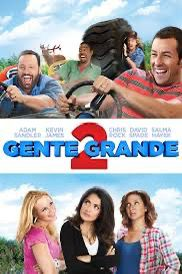

Gente Grande 2
Lenny (Adam Sandler) se mudou com sua família para a pequena cidade onde ele e seus amigos cresceram. Mas desta vez, são os adultos que irão aprender valiosas lições com seus filhos em um dia notoriamente cheio de surpresas: o último dia de aula.
Assista aqui!